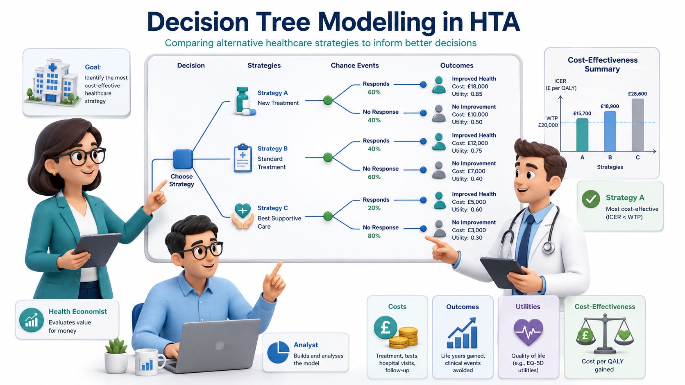
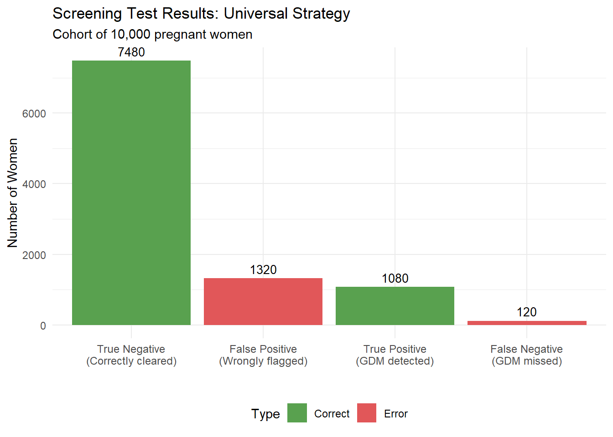
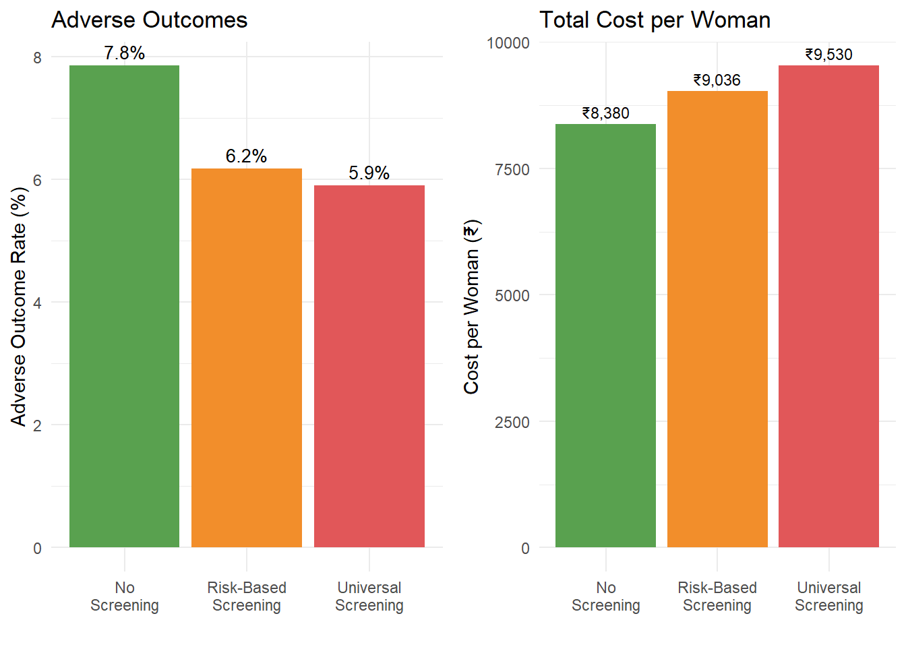
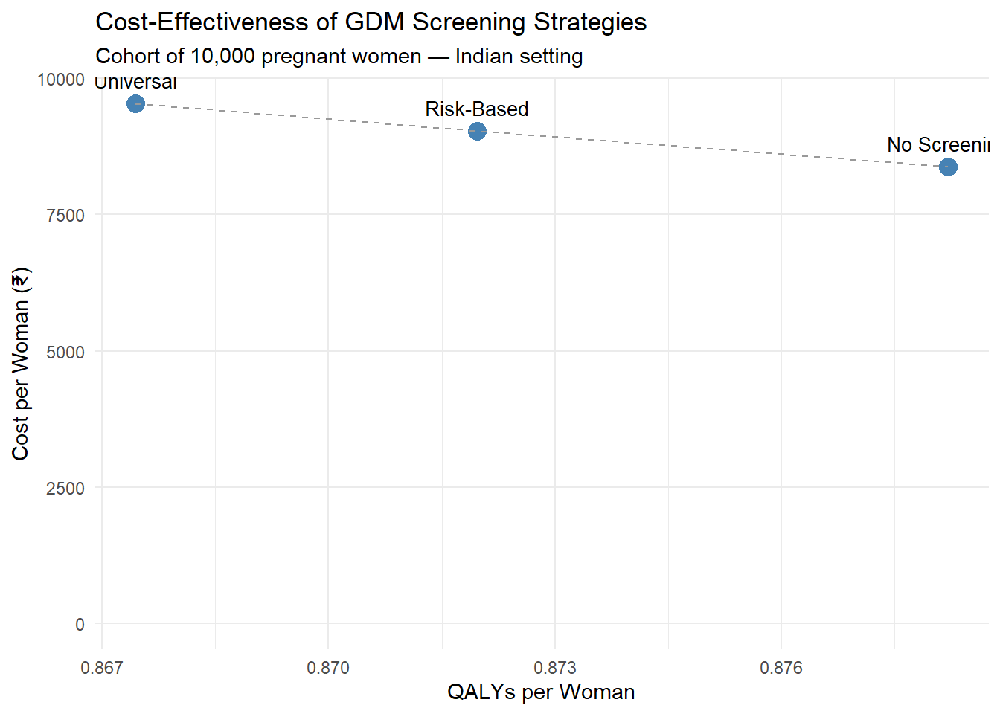

# ============================================================
# MODEL PARAMETERS — Gestational Diabetes Screening in India
# ============================================================
# --- Prevalence ---
# Source: Systematic review, Behboudi-Gandevani et al. 2019;
# National meta-analysis, Pujitha et al. 2024 (BMC Public Health)
# Indian GDM prevalence ranges 10-14.3%; we use 12% as base case
prev_gdm <- 0.12
# --- Population ---
# We model a cohort of 10,000 pregnant women
n_cohort <- 10000
# --- Risk-based screening coverage ---
# Proportion of women classified as "high risk" and offered screening
# Source: FOGSI guidelines; approximately 55-65% of Indian pregnant women
# have at least one risk factor
prop_high_risk <- 0.60
# GDM prevalence among high-risk vs low-risk women
# Source: Sreelakshmi et al. 2015 (IJRCOG)
prev_gdm_high_risk <- 0.18
prev_gdm_low_risk <- 0.03
# --- Test Accuracy: Fasting 75g OGTT (IADPSG criteria) ---
# Source: Defined as the reference standard; near-perfect when properly
# conducted. We use realistic performance accounting for
# pre-analytical errors in field conditions.
# Source: Seshiah et al. 2008; Mohan et al. 2014
sens_ogtt <- 0.90 # Sensitivity
spec_ogtt <- 0.85 # Specificity
# --- Screening Costs (₹) ---
# Source: Estimated from public hospital rates, NHM guidelines
cost_ogtt <- 250 # Cost of fasting 75g OGTT per woman
cost_risk_assessment <- 50 # Cost of risk factor assessment per woman
# --- Treatment Cost if GDM Detected (₹) ---
# Includes dietary counselling, glucose monitoring, insulin if needed
# Source: Estimated from Indian tertiary hospital data
cost_gdm_treatment <- 8000
# --- Outcome Probabilities ---
# Probability of adverse outcome (composite: macrosomia, birth injury,
# neonatal ICU admission, pre-eclampsia) if GDM is:
# Source: HAPO study (international); Indian data from Balaji et al. 2011
p_adverse_gdm_treated <- 0.10 # GDM detected and treated
p_adverse_gdm_untreated <- 0.35 # GDM present but undetected
p_adverse_no_gdm <- 0.05 # No GDM (background risk)
# --- Costs of Adverse Outcomes (₹) ---
# Source: Estimated from Indian NICU costs, C-section rates
cost_adverse <- 45000 # Average cost of managing adverse outcome
cost_no_adverse <- 5000 # Average cost of normal delivery
# --- Utility Weights (QALYs) ---
# Short-term utility over pregnancy and postpartum period
# Source: Moss et al. 2007 (international); adapted for Indian context
utility_adverse <- 0.65 # QALY weight if adverse outcome
utility_no_adverse <- 0.90 # QALY weight if no adverse outcome
utility_gdm_treated <- 0.82 # QALY weight for managed GDM (reduced anxiety, monitoring burden)
Decision Tree Modelling in R
The Clinical Question
Gestational Diabetes Mellitus (GDM) affects approximately 10–14% of pregnancies in India — substantially higher than Western countries. Undetected GDM increases risks of macrosomia, birth injuries, neonatal hypoglycaemia, pre-eclampsia, and future type 2 diabetes in the mother.
The question for HTA is: Should India implement universal screening for GDM using a fasting 75g OGTT, or is risk-based screening (screening only high-risk women) more cost-effective?
This is a classic diagnostic decision tree problem — the kind of analysis you might currently do in Excel or TreeAge. We will build it step by step in R.
The Decision Problem
We compare three strategies:
- Universal screening: All pregnant women receive a fasting 75g OGTT at 24–28 weeks (IADPSG criteria)
- Risk-based screening: Only women with risk factors (age >25, BMI >25, family history of diabetes, previous GDM) receive OGTT
- No formal screening: GDM detected only when symptomatic (status quo in many rural settings)
Model Parameters
All parameters are sourced from Indian studies where available. Let us define them in R:
NoteA Note on Data Sources
Where Indian-specific utility data was not available, we have adapted values from international studies with appropriate acknowledgement. In your own HTA work, you would ideally conduct a local utility study or use regionally validated EQ-5D values. The parameter values here are illustrative and should be updated with the best available evidence for a formal HTA submission.
Building the Decision Tree
library(DiagrammeR)
grViz("
digraph gdm_tree {
graph [rankdir=LR, bgcolor='transparent', fontname='Helvetica', nodesep=0.5]
node [fontname='Helvetica', fontsize=10]
D [label='Screening\nStrategy', shape=box, style='filled', fillcolor='#4e79a7', fontcolor='white', width=1.2]
# Strategy nodes
S1 [label='Universal\n Screening\n(All women get OGTT)', shape=box, style='filled,rounded', fillcolor='#59a14f', fontcolor='white']
S2 [label='Risk-Based\n Screening\n(High-risk get OGTT)', shape=box, style='filled,rounded', fillcolor='#f28e2b', fontcolor='white']
S3 [label='No Formal\n Screening\n(Clinical detection only)', shape=box, style='filled,rounded', fillcolor='#e15759', fontcolor='white']
# Chance nodes for Universal
C1 [label='GDM+\n(prev=12%)', shape=circle, style=filled, fillcolor='#d4e6f1', width=0.8, fontsize=9]
C2 [label='GDM-\n(88%)', shape=circle, style=filled, fillcolor='#d5f5e3', width=0.8, fontsize=9]
# Test results
TP [label='Test +\n(Sens=90%)\nTreat', shape=box, style='filled,rounded', fillcolor='#aed6f1', fontsize=9]
FN [label='Test -\n(10%)\n Missed', shape=box, style='filled,rounded', fillcolor='#f5b7b1', fontsize=9]
FP [label='Test +\n(1-Spec=15%)\n Unnec. treat', shape=box, style='filled,rounded', fillcolor='#fdebd0', fontsize=9]
TN [label='Test -\n(Spec=85%)\n Correctly cleared', shape=box, style='filled,rounded', fillcolor='#d5f5e3', fontsize=9]
D -> S1
D -> S2
D -> S3
S1 -> C1
S1 -> C2
C1 -> TP
C1 -> FN
C2 -> FP
C2 -> TN}")Strategy 1: Universal Screening
Every woman gets an OGTT. Those who test positive receive treatment.
# --- Universal Screening Strategy ---
# Total number screened
n_screened_universal <- n_cohort
# True disease status
n_gdm_true <- n_cohort * prev_gdm # Women who truly have GDM
n_no_gdm <- n_cohort * (1 - prev_gdm) # Women without GDM
# Test results
true_positive <- n_gdm_true * sens_ogtt # GDM detected correctly
false_negative <- n_gdm_true * (1 - sens_ogtt) # GDM missed
false_positive <- n_no_gdm * (1 - spec_ogtt) # Wrongly flagged
true_negative <- n_no_gdm * spec_ogtt # Correctly cleared
cat("=== Universal Screening Results ===\n")=== Universal Screening Results ===cat("Total screened:", n_screened_universal, "\n")Total screened: 10000 cat("True positives (GDM detected):", true_positive, "\n")True positives (GDM detected): 1080 cat("False negatives (GDM missed):", false_negative, "\n")False negatives (GDM missed): 120 cat("False positives (unnecessary treatment):", false_positive, "\n")False positives (unnecessary treatment): 1320 cat("True negatives (correctly cleared):", true_negative, "\n")True negatives (correctly cleared): 7480 library(ggplot2)
test_results <- data.frame(
Category = c("True Positive\n(GDM detected)", "False Negative\n(GDM missed)",
"False Positive\n(Wrongly flagged)", "True Negative\n(Correctly cleared)"),
Count = c(true_positive, false_negative, false_positive, true_negative),
Type = c("Correct", "Error", "Error", "Correct")
)
ggplot(test_results, aes(x = reorder(Category, -Count), y = Count, fill = Type)) +
geom_col() +
geom_text(aes(label = round(Count)), vjust = -0.5, size = 3.5) +
scale_fill_manual(values = c("Correct" = "#59a14f", "Error" = "#e15759")) +
labs(x = "", y = "Number of Women",
title = "Screening Test Results: Universal Strategy",
subtitle = paste0("Cohort of ", format(n_cohort, big.mark=","), " pregnant women")) +
theme_minimal() +
theme(legend.position = "bottom", axis.text.x = element_text(size = 9))
Now let us calculate costs and outcomes:
# --- Costs: Universal Screening ---
# Screening cost: everyone gets OGTT
cost_screening_universal <- n_cohort * cost_ogtt
# Treatment costs: true positives + false positives receive treatment
cost_treatment_universal <- (true_positive + false_positive) * cost_gdm_treatment
# Adverse outcome costs
# True positives: GDM treated → lower adverse probability
adverse_tp <- true_positive * p_adverse_gdm_treated
no_adverse_tp <- true_positive * (1 - p_adverse_gdm_treated)
# False negatives: GDM untreated → higher adverse probability
adverse_fn <- false_negative * p_adverse_gdm_untreated
no_adverse_fn <- false_negative * (1 - p_adverse_gdm_untreated)
# False positives: no GDM but treated → background adverse risk
adverse_fp <- false_positive * p_adverse_no_gdm
no_adverse_fp <- false_positive * (1 - p_adverse_no_gdm)
# True negatives: no GDM, correctly cleared → background risk
adverse_tn <- true_negative * p_adverse_no_gdm
no_adverse_tn <- true_negative * (1 - p_adverse_no_gdm)
# Total adverse outcomes and costs
total_adverse_universal <- adverse_tp + adverse_fn + adverse_fp + adverse_tn
total_no_adverse_universal <- no_adverse_tp + no_adverse_fn + no_adverse_fp + no_adverse_tn
cost_outcomes_universal <- total_adverse_universal * cost_adverse +
total_no_adverse_universal * cost_no_adverse
# Total cost
total_cost_universal <- cost_screening_universal + cost_treatment_universal +
cost_outcomes_universal
cat("=== Universal Screening: Cost Summary ===\n")=== Universal Screening: Cost Summary ===cat("Screening cost: ₹", format(cost_screening_universal, big.mark = ","), "\n")Screening cost: ₹ 2,500,000 cat("Treatment cost: ₹", format(cost_treatment_universal, big.mark = ","), "\n")Treatment cost: ₹ 19,200,000 cat("Outcome costs: ₹", format(round(cost_outcomes_universal), big.mark = ","), "\n")Outcome costs: ₹ 73,600,000 cat("TOTAL COST: ₹", format(round(total_cost_universal), big.mark = ","), "\n")TOTAL COST: ₹ 95,300,000 cat("\nAdverse outcomes:", round(total_adverse_universal), "out of", n_cohort, "\n")
Adverse outcomes: 590 out of 10000 # --- QALYs: Universal Screening ---
# QALYs by group
qaly_tp <- true_positive * ((1 - p_adverse_gdm_treated) * utility_gdm_treated +
p_adverse_gdm_treated * utility_adverse)
qaly_fn <- false_negative * ((1 - p_adverse_gdm_untreated) * utility_no_adverse +
p_adverse_gdm_untreated * utility_adverse)
qaly_fp <- false_positive * ((1 - p_adverse_no_gdm) * utility_gdm_treated +
p_adverse_no_gdm * utility_adverse)
qaly_tn <- true_negative * ((1 - p_adverse_no_gdm) * utility_no_adverse +
p_adverse_no_gdm * utility_adverse)
total_qaly_universal <- qaly_tp + qaly_fn + qaly_fp + qaly_tn
cat("Total QALYs (Universal Screening):", round(total_qaly_universal, 1), "\n")Total QALYs (Universal Screening): 8674.4 cat("Mean QALY per woman:", round(total_qaly_universal / n_cohort, 4), "\n")Mean QALY per woman: 0.8674 Strategy 2: Risk-Based Screening
Only high-risk women are offered OGTT. Low-risk women are not screened.
# --- Risk-Based Screening Strategy ---
n_high_risk <- n_cohort * prop_high_risk
n_low_risk <- n_cohort * (1 - prop_high_risk)
# Among high-risk women
n_gdm_hr <- n_high_risk * prev_gdm_high_risk
n_no_gdm_hr <- n_high_risk * (1 - prev_gdm_high_risk)
tp_hr <- n_gdm_hr * sens_ogtt
fn_hr <- n_gdm_hr * (1 - sens_ogtt)
fp_hr <- n_no_gdm_hr * (1 - spec_ogtt)
tn_hr <- n_no_gdm_hr * spec_ogtt
# Among low-risk women (NOT screened — GDM undetected)
n_gdm_lr <- n_low_risk * prev_gdm_low_risk
n_no_gdm_lr <- n_low_risk * (1 - prev_gdm_low_risk)
cat("=== Risk-Based Screening Results ===\n")=== Risk-Based Screening Results ===cat("High-risk women screened:", n_high_risk, "\n")High-risk women screened: 6000 cat("Low-risk women NOT screened:", n_low_risk, "\n")Low-risk women NOT screened: 4000 cat("GDM detected (high-risk true positives):", tp_hr, "\n")GDM detected (high-risk true positives): 972 cat("GDM missed in high-risk (false negatives):", fn_hr, "\n")GDM missed in high-risk (false negatives): 108 cat("GDM missed in low-risk (never screened):", n_gdm_lr, "\n")GDM missed in low-risk (never screened): 120 cat("Total GDM missed:", fn_hr + n_gdm_lr, "\n")Total GDM missed: 228 # --- Costs: Risk-Based Screening ---
# Screening cost: risk assessment for all, OGTT only for high-risk
cost_screening_risk <- n_cohort * cost_risk_assessment + n_high_risk * cost_ogtt
# Treatment cost: only high-risk true positives + false positives
cost_treatment_risk <- (tp_hr + fp_hr) * cost_gdm_treatment
# Adverse outcomes
# High-risk: detected GDM (treated)
adverse_tp_hr <- tp_hr * p_adverse_gdm_treated
# High-risk: missed GDM (untreated)
adverse_fn_hr <- fn_hr * p_adverse_gdm_untreated
# High-risk: false positives (background risk)
adverse_fp_hr <- fp_hr * p_adverse_no_gdm
# High-risk: true negatives
adverse_tn_hr <- tn_hr * p_adverse_no_gdm
# Low-risk: undetected GDM
adverse_gdm_lr <- n_gdm_lr * p_adverse_gdm_untreated
# Low-risk: no GDM
adverse_no_gdm_lr <- n_no_gdm_lr * p_adverse_no_gdm
total_adverse_risk <- adverse_tp_hr + adverse_fn_hr + adverse_fp_hr +
adverse_tn_hr + adverse_gdm_lr + adverse_no_gdm_lr
total_no_adverse_risk <- n_cohort - total_adverse_risk # Simplified
cost_outcomes_risk <- total_adverse_risk * cost_adverse +
total_no_adverse_risk * cost_no_adverse
total_cost_risk <- cost_screening_risk + cost_treatment_risk + cost_outcomes_risk
cat("=== Risk-Based Screening: Cost Summary ===\n")=== Risk-Based Screening: Cost Summary ===cat("Screening cost: ₹", format(cost_screening_risk, big.mark = ","), "\n")Screening cost: ₹ 2e+06 cat("Treatment cost: ₹", format(round(cost_treatment_risk), big.mark = ","), "\n")Treatment cost: ₹ 13,680,000 cat("Outcome costs: ₹", format(round(cost_outcomes_risk), big.mark = ","), "\n")Outcome costs: ₹ 74,680,000 cat("TOTAL COST: ₹", format(round(total_cost_risk), big.mark = ","), "\n")TOTAL COST: ₹ 90,360,000 cat("\nAdverse outcomes:", round(total_adverse_risk), "out of", n_cohort, "\n")
Adverse outcomes: 617 out of 10000 # --- QALYs: Risk-Based Screening ---
qaly_tp_hr <- tp_hr * ((1 - p_adverse_gdm_treated) * utility_gdm_treated +
p_adverse_gdm_treated * utility_adverse)
qaly_fn_hr <- fn_hr * ((1 - p_adverse_gdm_untreated) * utility_no_adverse +
p_adverse_gdm_untreated * utility_adverse)
qaly_fp_hr <- fp_hr * ((1 - p_adverse_no_gdm) * utility_gdm_treated +
p_adverse_no_gdm * utility_adverse)
qaly_tn_hr <- tn_hr * ((1 - p_adverse_no_gdm) * utility_no_adverse +
p_adverse_no_gdm * utility_adverse)
qaly_gdm_lr <- n_gdm_lr * ((1 - p_adverse_gdm_untreated) * utility_no_adverse +
p_adverse_gdm_untreated * utility_adverse)
qaly_no_gdm_lr <- n_no_gdm_lr * ((1 - p_adverse_no_gdm) * utility_no_adverse +
p_adverse_no_gdm * utility_adverse)
total_qaly_risk <- qaly_tp_hr + qaly_fn_hr + qaly_fp_hr +
qaly_tn_hr + qaly_gdm_lr + qaly_no_gdm_lr
cat("Total QALYs (Risk-Based Screening):", round(total_qaly_risk, 1), "\n")Total QALYs (Risk-Based Screening): 8719.7 cat("Mean QALY per woman:", round(total_qaly_risk / n_cohort, 4), "\n")Mean QALY per woman: 0.872 Strategy 3: No Formal Screening
GDM is detected only when symptomatic (estimated detection rate ~25% based on clinical presentation alone).
# --- No Screening Strategy ---
# Detection rate through clinical presentation alone
detection_rate_clinical <- 0.25
n_gdm_total <- n_cohort * prev_gdm
n_no_gdm_total <- n_cohort * (1 - prev_gdm)
n_gdm_detected_clinical <- n_gdm_total * detection_rate_clinical
n_gdm_undetected <- n_gdm_total * (1 - detection_rate_clinical)
# Costs: no screening cost, treatment only for clinically detected
cost_screening_none <- 0
cost_treatment_none <- n_gdm_detected_clinical * cost_gdm_treatment
# Adverse outcomes
adverse_detected <- n_gdm_detected_clinical * p_adverse_gdm_treated
adverse_undetected <- n_gdm_undetected * p_adverse_gdm_untreated
adverse_no_gdm_none <- n_no_gdm_total * p_adverse_no_gdm
total_adverse_none <- adverse_detected + adverse_undetected + adverse_no_gdm_none
total_no_adverse_none <- n_cohort - total_adverse_none
cost_outcomes_none <- total_adverse_none * cost_adverse +
total_no_adverse_none * cost_no_adverse
total_cost_none <- cost_screening_none + cost_treatment_none + cost_outcomes_none
# QALYs
qaly_detected <- n_gdm_detected_clinical * ((1 - p_adverse_gdm_treated) * utility_gdm_treated +
p_adverse_gdm_treated * utility_adverse)
qaly_undetected <- n_gdm_undetected * ((1 - p_adverse_gdm_untreated) * utility_no_adverse +
p_adverse_gdm_untreated * utility_adverse)
qaly_no_gdm_none <- n_no_gdm_total * ((1 - p_adverse_no_gdm) * utility_no_adverse +
p_adverse_no_gdm * utility_adverse)
total_qaly_none <- qaly_detected + qaly_undetected + qaly_no_gdm_none
cat("=== No Screening: Results ===\n")=== No Screening: Results ===cat("GDM detected clinically:", n_gdm_detected_clinical, "out of", n_gdm_total, "\n")GDM detected clinically: 300 out of 1200 cat("TOTAL COST: ₹", format(round(total_cost_none), big.mark = ","), "\n")TOTAL COST: ₹ 83,800,000 cat("Adverse outcomes:", round(total_adverse_none), "out of", n_cohort, "\n")Adverse outcomes: 785 out of 10000 cat("Total QALYs:", round(total_qaly_none, 1), "\n")Total QALYs: 8782.1 Comparing the Three Strategies
# --- Summary Comparison ---
library(knitr)
results <- data.frame(
Strategy = c("Universal Screening", "Risk-Based Screening", "No Screening"),
Total_Cost = c(total_cost_universal, total_cost_risk, total_cost_none),
Total_QALYs = c(total_qaly_universal, total_qaly_risk, total_qaly_none),
Adverse_Outcomes = c(total_adverse_universal, total_adverse_risk, total_adverse_none)
)
# Format for display
results$Cost_per_Woman <- results$Total_Cost / n_cohort
results$QALY_per_Woman <- results$Total_QALYs / n_cohort
results$Adverse_Rate <- paste0(round(results$Adverse_Outcomes / n_cohort * 100, 1), "%")
results$Total_Cost <- paste0("₹", format(round(results$Total_Cost), big.mark = ","))
kable(results[, c("Strategy", "Total_Cost", "QALY_per_Woman", "Adverse_Rate")],
col.names = c("Strategy", "Total Cost (cohort)", "QALY per Woman", "Adverse Outcome Rate"),
digits = 4,
caption = "Comparison of GDM Screening Strategies (cohort of 10,000 women)")| Strategy | Total Cost (cohort) | QALY per Woman | Adverse Outcome Rate |
|---|---|---|---|
| Universal Screening | ₹95,300,000 | 0.8674 | 5.9% |
| Risk-Based Screening | ₹90,360,000 | 0.8720 | 6.2% |
| No Screening | ₹83,800,000 | 0.8782 | 7.8% |
adverse_data <- data.frame(
Strategy = c("Universal\nScreening", "Risk-Based\nScreening", "No\nScreening"),
Adverse_Rate = c(total_adverse_universal / n_cohort * 100,
total_adverse_risk / n_cohort * 100,
total_adverse_none / n_cohort * 100),
Cost_Per_Woman = c(total_cost_universal / n_cohort,
total_cost_risk / n_cohort,
total_cost_none / n_cohort)
)
library(gridExtra)
p1 <- ggplot(adverse_data, aes(x = Strategy, y = Adverse_Rate, fill = Strategy)) +
geom_col(show.legend = FALSE) +
geom_text(aes(label = paste0(round(Adverse_Rate, 1), "%")), vjust = -0.5, size = 3.5) +
scale_fill_manual(values = c("#59a14f", "#f28e2b", "#e15759")) +
labs(x = "", y = "Adverse Outcome Rate (%)",
title = "Adverse Outcomes") +
theme_minimal()
p2 <- ggplot(adverse_data, aes(x = Strategy, y = Cost_Per_Woman, fill = Strategy)) +
geom_col(show.legend = FALSE) +
geom_text(aes(label = paste0("₹", format(round(Cost_Per_Woman), big.mark=","))), vjust = -0.5, size = 3) +
scale_fill_manual(values = c("#59a14f", "#f28e2b", "#e15759")) +
labs(x = "", y = "Cost per Woman (₹)",
title = "Total Cost per Woman") +
theme_minimal()
grid.arrange(p1, p2, ncol = 2)
ICER and Net Monetary Benefit
library(knitr)
# --- ICER Calculations ---
# Using no screening as the reference comparator
# Risk-based vs No screening
inc_cost_risk_vs_none <- total_cost_risk - total_cost_none
inc_qaly_risk_vs_none <- total_qaly_risk - total_qaly_none
icer_risk_vs_none <- inc_cost_risk_vs_none / inc_qaly_risk_vs_none
# Universal vs No screening
inc_cost_univ_vs_none <- total_cost_universal - total_cost_none
inc_qaly_univ_vs_none <- total_qaly_universal - total_qaly_none
icer_univ_vs_none <- inc_cost_univ_vs_none / inc_qaly_univ_vs_none
# Universal vs Risk-based
inc_cost_univ_vs_risk <- total_cost_universal - total_cost_risk
inc_qaly_univ_vs_risk <- total_qaly_universal - total_qaly_risk
icer_univ_vs_risk <- inc_cost_univ_vs_risk / inc_qaly_univ_vs_risk
# WTP threshold
wtp_india <- 170000
# --- 4-quadrant ICER interpretation ---
interpret_icer <- function(dc, dq, wtp) {
if (dc < 0 & dq > 0) return("DOMINANT")
if (dc > 0 & dq < 0) return("DOMINATED")
if (dc > 0 & dq > 0) return(if (dc/dq < wtp) "Cost-effective" else "Not CE")
return("Trade-off (cheaper but worse)")
}
# Summary table
kable(data.frame(
Comparison = c("Risk-Based vs No Screening",
"Universal vs No Screening",
"Universal vs Risk-Based"),
`Incr Cost/woman (₹)` = c(
paste0("₹", format(round(inc_cost_risk_vs_none / n_cohort), big.mark = ",")),
paste0("₹", format(round(inc_cost_univ_vs_none / n_cohort), big.mark = ",")),
paste0("₹", format(round(inc_cost_univ_vs_risk / n_cohort), big.mark = ","))
),
`Incr QALYs/woman` = c(
round(inc_qaly_risk_vs_none / n_cohort, 4),
round(inc_qaly_univ_vs_none / n_cohort, 4),
round(inc_qaly_univ_vs_risk / n_cohort, 4)
),
`ICER (₹/QALY)` = c(
paste0("₹", format(round(icer_risk_vs_none), big.mark = ",")),
paste0("₹", format(round(icer_univ_vs_none), big.mark = ",")),
paste0("₹", format(round(icer_univ_vs_risk), big.mark = ","))
),
Conclusion = c(
interpret_icer(inc_cost_risk_vs_none, inc_qaly_risk_vs_none, wtp_india),
interpret_icer(inc_cost_univ_vs_none, inc_qaly_univ_vs_none, wtp_india),
interpret_icer(inc_cost_univ_vs_risk, inc_qaly_univ_vs_risk, wtp_india)
),
check.names = FALSE
), align = "lrrrr",
caption = paste0("Incremental cost-effectiveness (WTP = ₹", format(wtp_india, big.mark = ","), "/QALY)"))| Comparison | Incr Cost/woman (₹) | Incr QALYs/woman | ICER (₹/QALY) | Conclusion |
|---|---|---|---|---|
| Risk-Based vs No Screening | ₹656 | -0.0062 | ₹-105,007 | DOMINATED |
| Universal vs No Screening | ₹1,150 | -0.0108 | ₹-106,748 | DOMINATED |
| Universal vs Risk-Based | ₹494 | -0.0045 | ₹-109,152 | DOMINATED |
Net Monetary Benefit
The ICER can be ambiguous when negative (DOMINANT and DOMINATED both produce negative ratios). The NMB gives an unambiguous answer: positive ΔNMB = adopt.
# NMB = WTP × QALYs − Cost (per woman)
nmb_none <- wtp_india * (total_qaly_none / n_cohort) - (total_cost_none / n_cohort)
nmb_risk <- wtp_india * (total_qaly_risk / n_cohort) - (total_cost_risk / n_cohort)
nmb_univ <- wtp_india * (total_qaly_universal / n_cohort) - (total_cost_universal / n_cohort)
kable(data.frame(
Strategy = c("No Screening", "Risk-Based Screening", "Universal Screening"),
`NMB per woman (₹)` = c(
paste0("₹", format(round(nmb_none), big.mark = ",")),
paste0("₹", format(round(nmb_risk), big.mark = ",")),
paste0("₹", format(round(nmb_univ), big.mark = ","))
),
Ranking = rank(-c(nmb_none, nmb_risk, nmb_univ)),
check.names = FALSE
), align = "lrr",
caption = paste0("Net Monetary Benefit (WTP = ₹", format(wtp_india, big.mark = ","), "/QALY) — highest NMB is optimal"))| Strategy | NMB per woman (₹) | Ranking |
|---|---|---|
| No Screening | ₹140,917 | 1 |
| Risk-Based Screening | ₹139,199 | 2 |
| Universal Screening | ₹137,935 | 3 |
TipReading the NMB Table
The strategy with the highest NMB is the optimal choice at the given WTP threshold. Unlike the ICER (which only compares pairs), NMB ranks all strategies simultaneously — making it easy to identify the best option when there are more than two comparators.
Visualising the Results
library(ggplot2)
plot_data <- data.frame(
Strategy = c("No Screening", "Risk-Based", "Universal"),
Cost = c(total_cost_none / n_cohort,
total_cost_risk / n_cohort,
total_cost_universal / n_cohort),
QALY = c(total_qaly_none / n_cohort,
total_qaly_risk / n_cohort,
total_qaly_universal / n_cohort)
)
ggplot(plot_data, aes(x = QALY, y = Cost, label = Strategy)) +
geom_point(size = 4, colour = "steelblue") +
geom_text(vjust = -1, hjust = 0.5, size = 3.5) +
geom_line(linetype = "dashed", colour = "grey60") +
labs(
x = "QALYs per Woman",
y = "Cost per Woman (₹)",
title = "Cost-Effectiveness of GDM Screening Strategies",
subtitle = "Cohort of 10,000 pregnant women — Indian setting"
) +
theme_minimal() +
expand_limits(y = 0)
What You Just Did
Without writing any code from scratch, you followed a complete diagnostic decision tree analysis:
- Defined the clinical question using Indian epidemiological data
- Structured the decision tree with three screening strategies
- Populated it with parameters from published Indian literature
- Calculated costs, QALYs, and ICERs for each strategy
- Visualised the results on a cost-effectiveness plane
In Excel, changing a single parameter (say, GDM prevalence) would require tracing through multiple cells. In R, you change one number at the top and re-run the entire analysis.
Key References
- Pujitha KS et al. (2024). National and regional prevalence of gestational diabetes mellitus in India: a systematic review and meta-analysis. BMC Public Health.
- Seshiah V et al. (2008). Prevalence of gestational diabetes mellitus in South India. JAPI.
- Mohan V et al. (2014). Comparison of screening for GDM using IADPSG, DIPSI, and WHO 1999 criteria.
- Behboudi-Gandevani S et al. (2019). Worldwide prevalence of GDM: a systematic review.
- HAPO Study Cooperative Research Group (2008). Hyperglycemia and Adverse Pregnancy Outcomes. NEJM.
- NHM India. National Guidelines for Diagnosis & Management of Gestational Diabetes Mellitus.
- Moss JR et al. (2007). Cost-effectiveness of screening for GDM. BJOG.